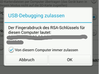

adb
Dieser Artikel wurde für die folgenden Ubuntu-Versionen getestet:
Ubuntu 16.04 Xenial Xerus
Ubuntu 14.04 Trusty Tahr
Zum Verständnis dieses Artikels sind folgende Seiten hilfreich:
adb (Android Debug Bridge, aus dem Android-SDK  ) ist eine Software-Schnittstelle, um vom Computer aus Android-Geräte zu verwalten, Anwendungen zu installieren oder Daten auszutauschen. Es können ggf. auch ganze ROMs installiert ("geflasht") werden (
) ist eine Software-Schnittstelle, um vom Computer aus Android-Geräte zu verwalten, Anwendungen zu installieren oder Daten auszutauschen. Es können ggf. auch ganze ROMs installiert ("geflasht") werden (adb sideload). Dabei ist eine Verbindung sowohl über USB-Kabel als auch - für einige Funktionen - über WiFi möglich. Das Programm ist unter Windows, iOS und Linux nutzbar.
Installation¶
Es gibt verschiedene Möglichkeiten, das Programm zu installieren[1]. Aus den offiziellen Quellen kann folgendes Paket installiert werden
android-tools-adb
 mit apturl
mit apturl
Paketliste zum Kopieren:
sudo apt-get install android-tools-adb
sudo aptitude install android-tools-adb
Alternative kann es aus der Android-SDK-Suite bezogen werden; die beiden Installationsarten schließen sich aber gegenseitig aus:
adb
mit apturl
Paketliste zum Kopieren:
sudo apt-get install adb
sudo aptitude install adb
Aktuelle Version¶
Die jeweils aktuellste Version (z.B. 1.0.39, Oktober 2017) kann als Teil der SDK Platform Tools von der Download-Seite des Projekts Platform Tools / bezogen werden. Insbesondere sinnvoll ist die Verwendung für neuer Android-Versionen. Das heruntergeladene Linux-Archiv entpacken[2], die u.a. darin befindliche Datei adb kann direkt verwendet werden; ggf. für systemweite Nutzung das Programm in ein im
bezogen werden. Insbesondere sinnvoll ist die Verwendung für neuer Android-Versionen. Das heruntergeladene Linux-Archiv entpacken[2], die u.a. darin befindliche Datei adb kann direkt verwendet werden; ggf. für systemweite Nutzung das Programm in ein im PATH vorgesehenes Verzeichnis verschieben/verlinken, z.B. /usr/local/bin (Rootrechte[3] erforderlich!).
Die neuere adb-Version verträgt sich nicht mit einer aus den Quellen installierten adb, diese ggf. also wieder deinstallieren!
Hinweis!
Fremdsoftware kann das System gefährden.
Vorbereitung¶
udev-Regel¶
Die passenden udev-Regeln für verschiedenste Hersteller werden am einfachsten über das Paket android-sdk-platform-tools-common installiert, die Regeln befindet sich in /lib/udev/rules.d/51-android.rules. Bei Bedarf können weitere Hersteller-Einträge hinzugefügt werden. Dazu benötigt man die Vendor-ID (z.B. aus der lsusb-Ausgabe bei angeschlossenem Gerät auslesbar, erster Teil der ID-Ausgabe), in folgender Form können dann in einem Editor[4] mit Root-Rechten neue Einträge hinzugefügt werden:
#HERSTELLER
SUBSYSTEM=="usb", ATTR{idVendor}=="XXXX", MODE="0664", GROUP="plugdev"Der Benutzer muss Mitglied in der Gruppe plugdev sein, was meist der Fall ist, bei Problemen ggf. überprüfen
Mit
sudo udevadm control --reload-rules
werden die Regeln dann neu gestartet.

USB-Debugging¶
Auf dem Android-Gerät muss in den Einstellungen unter den "Entwickleroptionen -> USB-Debugging" aktiviert werden, damit eine Verbindung zustande kommen kann, bei neueren Android-Versionen ggf. auch die "OEM-Entsperrung" aktivieren (Bootlader-Entsperrung). Um auf das Gerät zugreifen zu können muss der Zugriff dauerhaft gestattet werden. Beim ersten Ausführen eines adb-Befehls erscheint eine Meldung auf dem Gerät, siehe Abbildung rechts, hier die Checkbox aktivieren, und mit "OK" bestätigen.
Der Akku des Geräts muss gut aufgeladen sein, ebenso auf eine sichere Verbindung zwischen Gerät und Computer achten (keine defekten Kabel oder USB-Ports verwenden, kontinuierliche Stromversorgung des PCs sicherstellen, kein versehentliches Abziehen des USB-Kabels)!
Achtung!
Die Verwendung des Programms geschieht aus eigene Gefahr!
Vor Verwendung wird die Erstellung eines kompletten System- und Daten-Backups des HGeräts dringend empfohlen!
Der Eingriff in das Betriebssystem des Geräts stellt immer ein erhebliches potentielles Risiko dar. Daher vorher sehr genau prüfen, ob z.B. das gewählte ROM oder die Apps für das eigene Gerät geeignet sind; bei Fehlverwendung drohen ggf. schwerwiegende Schäden. Mit dem Einsatz erlöschen ggf. die Garantieansprüche an den Geräte-Hersteller, offizielle Software-Updates sind dann nicht mehr bzw. nur nach Herstellung des Ursprungszustand möglich. Bei Schäden wird jegliche Verantwortung und Haftung abgelehnt!
Verwendung¶
adb ist ein reines Kommandozeilenwerkzeug, die allgemeine Syntax auf der Kommandozeile lautet
adb OPTION BEFEHL
Um festzustellen, ob das Android-Gerät erreichbar ist, folgenden Befehl im Terminal [2] eingeben:
adb devices
Falls adb in der aktuellen Sitzung noch nicht verwendet worden ist, meldet das Terminal zunächst der Start des adb-Daemons, danach erscheint, wenn alles glatt geht, etwas wie
* daemon not running. starting it now on port 5037 * * daemon started successfully * List of devices attached 5200d6fd904b2200 device
Falls stattdessen nach List of Devices attached nur eine Leerzeile erscheint, wird das Gerät (noch) nicht erreicht; in den USB-Verbindungs-Einstellungen auf dem Gerät überprüfen, ob ggf. "Nur Laden" ausgewählt ist. Wenn statt device ein unauthorized steht, ist die Verbindung zwar erstellt worden, muss auf dem Gerät bestätigt werden; dazu in einer auf dem Gerät gezeigten Meldung den dauerhaften Zugriff bestätigen. Wird neben der Gerätenummer recovery ausgegeben, befindet sich das Gerät im Recovery-Modus  .
.
Falls über adb das Gerät - im selben WLAN-Netz wie der Rechner - kabellos verwaltet werden soll, muss ggf. eine entsprechende App auf dem Gerät laufen, siehe dazu den Eintrag auf Android-User.de , Hintergründe auch auf Wireless ADB Wireless .
Nutzen lässt sich adb für eine Vielzahl von Aufgaben, z.B. Dateitransfer, Synchronisation von Verzeichnissen, Erstellung und Wiedereinspielen von Backups (von einzelnen Dateien bis zu Komplett-Sicherungen), Installation und Entfernen von Apps, Wechsel von Geräte-Modi u.v.m.
Befehle und Optionen¶
Die Angaben beziehen sich auf adb in Version 1.0.39; ältere Versionen bieten ggf. nicht alle Optionen; diese Auflistung ist zudem nicht vollständig!
| adb-Befehle und Optionen | ||
| Befehl, ggf. mit DATEINAME | mögliche Optionen | Funktion |
devices | -l | listet die verbundenen Gerät auf, ggf. auch als IP-Adresse; -l liefert genauere Informationen |
connect HOST:PORTdisconnect HOST:PORT | Verbindet/trennt ein Gerät via TCP/IP, Port 5555 wird verwendet, wenn keine Portnummer angegeben ist. Getrennt werden alle Geräte, wenn keine zusätzliche Angabe gemacht wird | |
push /COMPUTERPFAD/DATEI /GERÄTEPFAD/DATEI | Kopiert eine Datei vom Computer auf das Gerät | |
pull /GERÄTEPFAD/DATEI /COMPUTERPFAD/DATEI | -a | Kopiert eine Datei vom Gerät auf den Computer ,-a bewahrt den Zeitstempel und Modus der Datei |
sync | VERZEICHNIS | Kopiere alle veränderten Dateien zum Gerät; Verzeichnis kann system, vendor, oem oder data sein, nur diese Partitionen werden synchronisiert; ohne VERZEICHNIS-Angabe werden alle synchronisiert, mit -l werden diese nur aufgelistet |
reboot | Ohne Option rebootet das Gerät neu ins Hauptsystem. Eine WiFi-Verbindung wird immer unterbrochen! | |
bootloader | Reboot in den Fastboot-Modus; auf Samsung-Geräten ggf. nicht möglich, siehe Heimdall | |
recovery | Reboot in den Recovery-Modus | |
sideload | Reboot in den Recovery-Modus und Starten des Sideload-Modus; muss ggf. im Recovery-Modus auf dem Gerät aktiviert werden | |
sideload-auto-reboot | ebenfalls Reboot in den Recovery-Modus, führt zum automatischen Reboot nach Ausführung des Sideload-Befehls. | |
download | undokumentiert; versetzt Samsung-Geräte in den Download- oder auch ODIN-Modus, bei anderen Geräten bootet das Gerät direkt ins Hauptsystem | |
install PAKETNAME install-multiple PAKETNAME (...) | Installiert PAKETNAME(N) auf dem Gerät | |
-l | Sichert die App mit "forward lock" (nur für Entwickler relevant, siehe auch diesen Eintrag auf Google-Groups zu Android Security ) | |
-r | ersetzt bestehende App | |
-t | lässt Testpakete zu | |
-s | Installiert die App auf eine (externen) SD-Karte | |
-d | Teilinstallationsinstallation wird zugelassen (nur für install-multiple nutzbar) | |
-p | Rückführung auf ältere Version (nur für "debug"-bare Pakete) | |
-g | Gewährt alle Laufzeitberechtigungen (ab Android 6 nutzbar) | |
uninstall PAKETNAME | -k | Entfernt PAKETNAME vom Gerät, -k erhält die Daten- und Cache-Ordner auf dem Gerät |
backup | -f DATEI | Dateiname für das Backup, ohne -f wird backup.ab erzeugt |
-apk|-noapk | ermöglicht/verhindert die Sicherung der .apk-Dateien, Standard: -noapk | |
-obb|-noobb | ermöglicht/verhindert die Sicherung von .apk-Erweiterungen (aka .obb), Standard: -noobb | |
-shared|-noshared | ermöglicht/verhindert die Sicherung der gemeinsamen Speicher/SD-Karten-Inhalte des Geräts, Standard -noshared | |
-all | alle installierten Apps werden einbezogen | |
-system|-nosystem | gibt an, ob bei Verwendung von -all die System-Apps einbezogen werden oder nicht; Standard ist -system | |
PAKETE... | Liste der zu sichernden Pakete | |
restore BACKUP-DATEI | Stellt den vorherigen Zustand aus der BACKUP-DATEI wieder her | |
shell | Öffnet eine interaktive Shell auf dem Geräte | |
-e ESCAPE | Escape-Zeichen festlegen, Standard ist "~" | |
-n | nicht von stdin lesen | |
-T|t | verhindert (-T)/erzwingt (-t) PTY:-Zuordnung | |
-x | unterbindet "remote exit codes" und stdout/stderr-Trennung | |
BEFEHL... | Shell-Befehle, sinnvoll zur effektiven Nutzung ist eine Busybox auf dem Gerät (ggf. nur für gerootete Geräte umsetzbar) | |
rootunroot | Neustart von adb mit/ohne Root-Rechten; das Gerät muss gerootet sein, um die Befehle nutzen zu können | |
usb | Neustart des adb-Servers, um an USB-Ports zu lauschen | |
tcpip PORT | Neustart des adb-Servers, um an TCP mit PORT-Nummer zu lauschen | |
sideload OTA-PAKET | Installiert OTA-PAKET (z.B. ein komplettes ROM). Näheres auch unter ADBSideload auf twrp.me Achtung!Mit größter Umsicht anwenden! Die Installation ungeeigneter OTA-Pakete kann zu schwerwiegenden Schäden führen! | |
Eine ausführliche Anleitung findet sich in diesem adb-Guide auf der Projektseite developer.android.com, der Befehl adb -h zeigt alle verwendbaren Optionen der installierten Version.
Probleme und Lösungen¶
Da es eine unüberschaubare Anzahl von Android-Geräten gibt, können hier nur generelle Lösungsvorschläge aufgeführt werden. Informationen zu vielen Geräten und Problemen findet man z.B. auf xda-developers , einem großes Portal rund um Handys, PDAs etc. pp. oder AndroidPit . Hintergrundinformationen liefert z.B. DroidWiki.org .
Probleme mit adb root¶
Falls trotz eines gerooteten Geräts der Befehl adb root scheitert, kann die Verwendung der App "adbd-insecure" helfen, die Verbindung zu ermöglichen (siehe diesen Forums-Thread auf xda-developers.com).
WLAN-Verbindung scheitert¶
Falls auf dem Gerät die App "adbd-insecure" installiert ist, muss diese deaktiviert werden, sonst ist eine WiFi-Verbindung nicht möglich.
Alternativen¶
Heimdall ist ein speziell für Samsung-Geräte entwickeltes Programm zu Flashen.
fastboot gehört ebenfalls zu den Android Platform Tools.
QtADB ist eine Benutzeroberfläche, um adb und fastboot zu nutzen.
Links¶
Download
/ SDK Platform ToolsADB für Anwender
- sehr guter Artikel zur NutzungEinführung
auf androitpit.deAndroid Debug Bridge
- Wiki-Eintrag auf droidwiki.deAndroid Studio
- Anleitung zum Installieren von Android Studio auf webupd8.orgAnleitung
für DebianInstallations-Anleitung
auf linuxwelt.blogspot.deAndroid-Users
- deutschsprachiges Android-Portal
- Erstellt mit Inyoka
-
 2004 – 2017 ubuntuusers.de • Einige Rechte vorbehalten
2004 – 2017 ubuntuusers.de • Einige Rechte vorbehalten
Lizenz • Kontakt • Datenschutz • Impressum • Serverstatus -
Serverhousing gespendet von